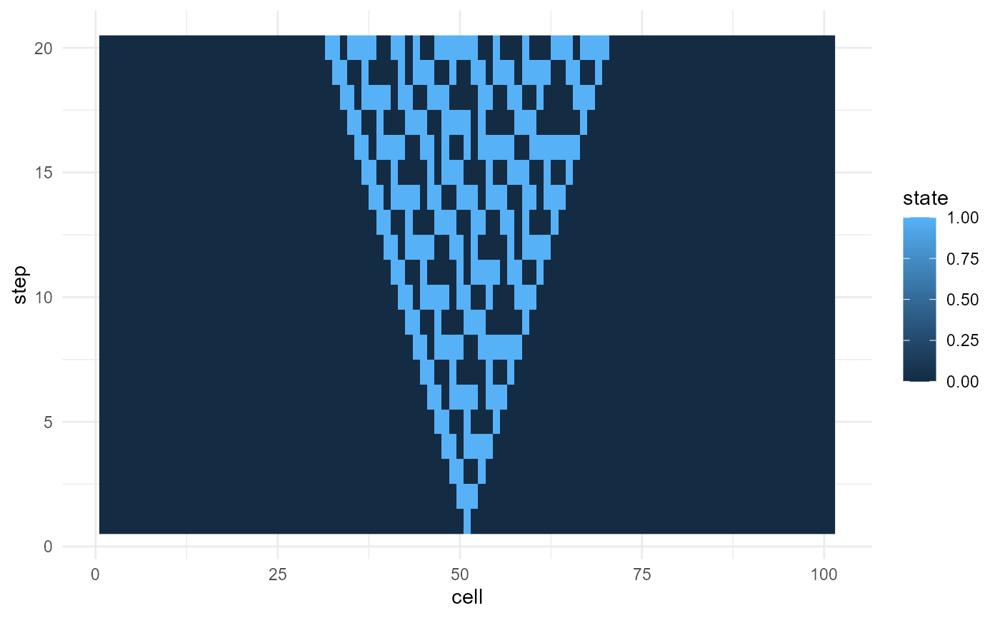

plot_emergence_sim() provides simple plotting support for simulation
outputs. It can create either line plots or raster plots.
Usage
plot_emergence_sim(
data,
x,
y,
value = NULL,
group = NULL,
type = c("line", "raster")
)Examples
ca <- simulate_cellular_automata(rule = 30, steps = 20)
plot_emergence_sim(ca, x = "cell", y = "step", value = "state", type = "raster")
